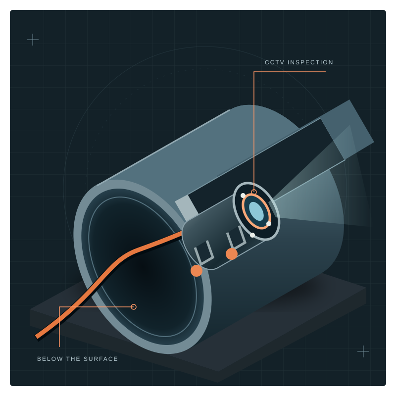

CCTV pipe inspection
Look inside your drainage system to investigate blockages, damage and recurring problems.
VERNON, BC · PIPE SPECIALISTS SINCE 1998
See what’s happening underground. Make a clearer plan above it. CCTV pipe inspections and trenchless solutions for homes, businesses and municipalities.

BELOW THE SURFACE
From investigating a recurring blockage to planning a repair, start with a better understanding of your pipes.
Look inside your drainage system to investigate blockages, damage and recurring problems.
Pipe cleaning, descaling and root cutting to address build-up and obstructions.
Ask about cured-in-place pipe rehabilitation and whether a no-dig approach suits your existing sewer line.
Pinpoint pipes and underground utilities to help inform your next project.
LOCAL PEOPLE. PRACTICAL KNOW-HOW.
Founded in Vernon in 1998, Down Under Pipe Inspection remains a family-owned business serving Okanagan property owners, contractors and municipalities. Owner Mark Tishenko and the team bring a focus on honest communication and careful workmanship to underground infrastructure.
Owner · Mark TishenkoA BETTER VIEW UNDERGROUND
Different pipes need different approaches. The team uses robotic crawler and push-camera systems, with video documentation to help explain what comes next.
For pipe diameters of 150–900 mm (6–36 in), with inspection runs up to 200 m (656 ft). A steerable camera helps examine larger lines.
For smaller lines of 50–150 mm (2–6 in), with inspection runs up to 120 m (400 ft). A flexible push-rod reaches drains and laterals.
Video footage and recommendations document the pipe condition. Integrated locating equipment helps identify the depth and position of an issue.
CIPP uses a resin-saturated liner or patch cured inside the existing pipe. Full relining and sectional spot repairs can reduce surface disruption where suitable, helping protect gardens and driveways. The team can assess the appropriate approach for your line.
Camera reach and repair suitability depend on pipe condition and site access. Confirm the scope with the team.CLARITY BEFORE COMMITMENT
A problem underground shouldn’t leave you guessing. Tell us what you’re seeing, where it’s happening and what you need to achieve. We’ll discuss the appropriate service for your situation.
A slow drain, recurring backup or planned project? Start with a conversation.
Discuss inspection, cleaning or locating to better understand the issue.
Explore repair options based on the condition of your pipe and your project.
FAQ
Your property location, the symptoms you have noticed and any previous inspection or repair information will help start the conversation.
CIPP stands for cured-in-place pipe. It is a trenchless rehabilitation method. Call to discuss whether it may be appropriate for your pipe.
Yes. Down Under serves residential, commercial and municipal projects. Contact the team to discuss your scope and location.
This website is available in English and French. Please call to confirm the languages available for your appointment.
LET’S GET A CLEARER PICTURE
Talk to a local pipe specialist about your property or your next project.
Call 250-938-1213Service availability and appointment times are confirmed by phone.